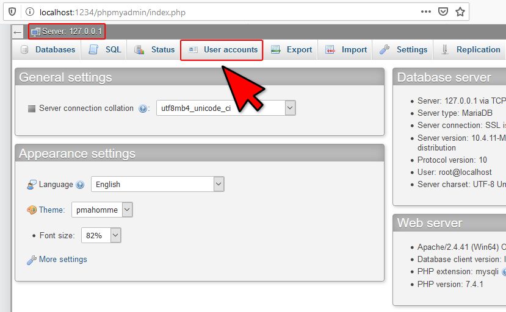
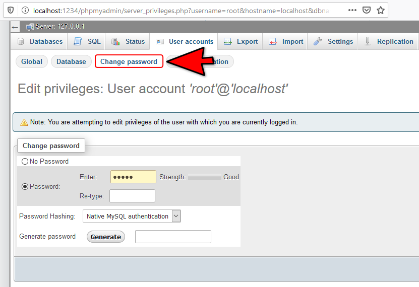

SQLالإتصال بقاعدة البيانات عن بعد
المستخدم root في MySQL
في هذه الدورة كنا نتعامل مع قواعد بيانات MySQL بشكل مباشر من خلال phpMyAdmin حيث لم نكن نضطر لكتابة إسم مستخدم و كلمة مرور حتى يسمح لنا خادم قاعدة البيانات ( Database Server ) بالتعامل مع قواعد البيانات.
سبب قدرتك على التعامل بشكل مباشر مع قواعد البيانات هو أن MySQL ينشئ لك مستخدم إفتراضي إسمه root لا يملك كلمة مرور و يملك كل الصلاحيات التي تخوله لإجراء كافة أنواع العمليات على قواعد البيانات. المستخدم root يتم الدخول بواستطه بشكل تلقائي حين تحاول فتح صفحة phpMyAdmin في المتفصح لهذا لم يكن يطلب منك إدخال إسم مستخدم و كلمة مرور عند فتح الصفحة و كان يسمح لك بفعل ما تريد.
رؤية معلومات المستخدمين في phpMyAdmin
لمشاهدة معلومات المستخدمين لقواعد البيانات و صلاحياتهم في phpMyAdmin تأكد أنك متصل بالخادم فقط و من ثم قم بالنقر على كلمة User Accounts لفتح القسم الخاص بالمستخدمين و صلاحياتهم.

الصفحة التي ستفتح تتيح لك مشاهدة أسماء جميع المستخدمين و صلاحياتهم, تعديل صلاحية المستخدمين, إضافة مستخدم جديد و حذف مستخدم.
لاحظ أنه يوجد مستخدم إسمه root لم يتم وضع كلمة مرور له و عرفنا ذلك لأنه يظهر في العامود Password الكلمة No مما يعني أنه لم يتم وضع كلمة مرور. بالإضافة إلى ذلك فقد تم منحه جميع الصلاحيات و عرفنا ذلك لأنه يظهر في العامود Global Privileges جملة ALL PRIVILEGES و يظهر في العامود Grant كلمة Yes مما يعني أن جميع الصلاحيات ممنوحة له.
معلومة
سبب تكرار إسم المستخدم root ثلاث مرات و كل مرة تم إعطاؤه Host Name هو أن قواعد بيانات MySQL تتيح لك وضع صلاحيات للمستخدم على حسب الطريقة التي سيدخل منها و لكن لا تشغل بالك بهذه التفاصيل.
تعديل معلومات و صلاحيات المستخدمين في phpMyAdmin
في البداية و قبل البدء عليك معرفة أنه عند إجراء أي تعديل على معلومات المستخدم أو صلاحياته من خلال هذه الصفحة يجب أن تنقر على الزر Go الذي ستجده في أسفل كل صفحة حتى تحفظ التغييرات التي قمت بإجرائها.
الآن لتعديل معلومات دخول أو صلاحيات أي مستخدم, أنقر على Edit Previleges التي تظهر بجانب إسمه كالتالي.

لتعديل صلاحيات المستخدم, يمكنك الدخول للقسم Global و فيه تقوم بتحديد أو إلغاء تحديد أي صلاحية تريد و من بعدها لا تنسى الضغط على الزر Go لحفظ التغيرات. و هنا لاحظ أن المستخدم root يملك جميع الصلاحيات كما سبق و قلنا.
لإعطاء المستخدم صلاحيات محددة لكل قاعدة بيانات على حدا, يمكنك الدخول للقسم Database و فيه تقوم بتحديد إسم قاعدة البيانات سواء تكتبه بنفسك أو تختاره من القائمة التي تظهر فيها قواعد البيانات و من بعدها لا تنسى الضغط على الزر Go حتى تبدأ بتحديد صلاحيات المستخدم فيها.
لتغيير كلمة مرور المستخدم, يمكنك الدخول للقسم Change Password و فيه يطلب منك إدخال كلمة المرور القديمة و من ثم إدخال كلمة المرور الجديدة. و من بعدها لا تنسى الضغط على الزر Go حتى تحفظ كلمة المرور الجديدة.

لتعديل معلومات دخول المستخدم, يمكنك الدخول للقسم Login Information و فيه تستطيع تغيير أي معلومة متعلقة بتسجيل دخول المستخدم و من بعدها لا تنسى الضغط على الزر Go لحفظ أي تغيرات تجريها.
لغات البرمجة و قواعد البيانات
عندما يربط المبرمج مشروعه بقاعدة بيانات سواء كان هذا المشروع عبارة عن موقع, تطبيق أو لعبة سيكون عليه أولاً تحديد مكان وجود قاعدة البيانات التي سيتصل بها و من ثم تحديد إسم المستخدم الذي سيتعامل من خلاله مع قاعدة البيانات إذا كانت قاعدة البيانات تجبرك على الدخول من خلال مستخدم خاص.
قواعد البيانات التي تعمل بشكل مباشر بدون الحاجة للدخول بواسطة مستخدم هي قواعد بيانات Access و SQLite.
قواعد البيانات الأخرى مثل MySQL و SQL Server و Oracle لا بد لك من تسجيل الدخول بواسطة مستخدم حتى تتمكن من التعامل معهم.
في دورة تعلم لغة جافا و دورة تعلم لغة بايثون شرحنا طريقة ربط المشاريع بقواعد بيانات MySQL خطوة خطوة.
الإتصال بقاعدة البيانات في جافا » الإتصال بقاعدة البيانات في بايثون »

 محرر الويب
محرر الويب نظام الألوان
نظام الألوان محول الوحدات
محول الوحدات محلل عناوين الشبكات
محلل عناوين الشبكات